Acordei cedo, me arrumei rápido, desci para o modestíssimo café da manha do Terrazas de Aguas Dulces. Uma moça que estava na pequena área de lanches me deu uma cestinha com dois pequenos pães e um potinho de manteiga. E uma xícara de café. Só.
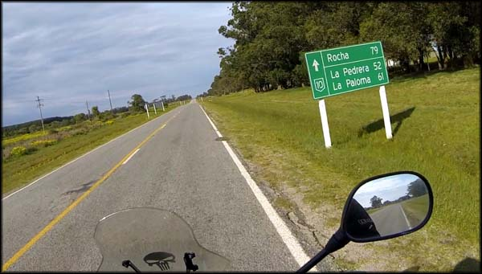De volta à estrada, a aventura continua...
Após o banquete peguei minha mochila com a câmera fotográfica e o resto do lanche do dia anterior, que seria provavelmente meu almoço. Rodei os 14 Km, voltando pela Ruta 10 até a entrada do Parque Nacional Cabo Polonio.
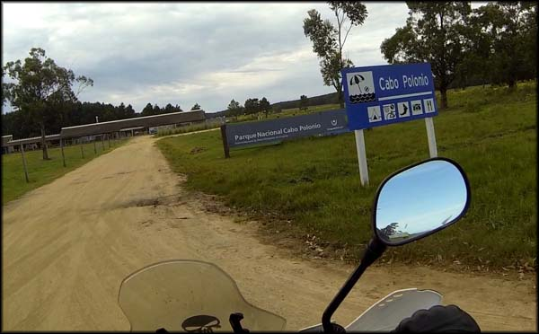Entrando no Parque Nacional Cabo Polonio, expectativa grande
Estacionei a moto, não havia cobrança de estacionamento, apesar de eu ter lido que existia. Provavelmente só funciona em alta temporada, apesar da placa com preços informar que naquela época custaria 80 pesos por 15 horas de estacionamento.
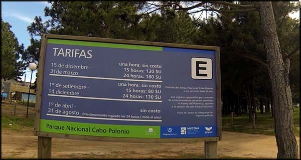Placa informava que eu teria que pagar 80 pesos. Ninguém me cobrou nada... ainda bem.
Lá mesmo troquei de roupa, e coloquei a calça jeans que levei. Estava bem frio, apesar do sol, e passar o dia de bermuda não era uma opção.
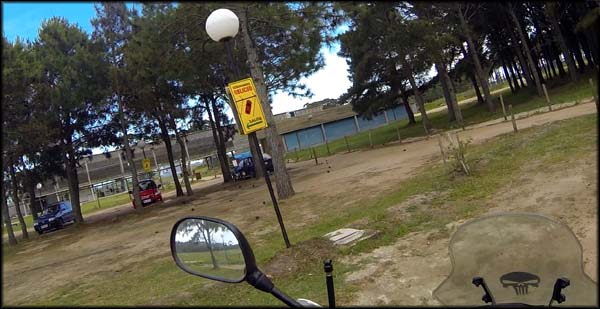Estacionamento do Parque cabo Polonio, bem arrumado
Fui até a recepção do parque, onde dois garotos com aparência de mochileiro já esperavam, dormindo sobre uns bancos de pedra. O atendimento ainda estava fechado. Fui até uma lanchonete, onde me informaram que a bilheteria só abre às 10:00h, e o primeiro caminhão 4x4 para Cabo Polonio sairia às 10:30.
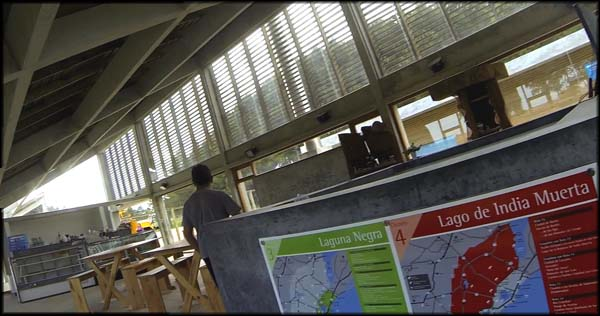A área administrativa do parque, bem bacana
Antigamente, pelo que eu soube, seria possível eu ter ido direto de moto até Cabo Polonio. Mas já há um tempo fecharam a entrada de veículos, criando uma área de preservação ambiental bem bacana. Atualmente, para chegar na praia e na pequena vila de Cabo Polonio, só pagando e curtindo o passeio em caminhões 4x4 que vão cortando as areias (não é tão caro, 170 pesos uruguaios ida e volta), ou atravessando a pé 8km de dunas de areia desde a cidade mais próxima, que é Valizas. Escolhi ir de caminhão 4x4 porque além de mais rápido, achei que seria mais divertido.
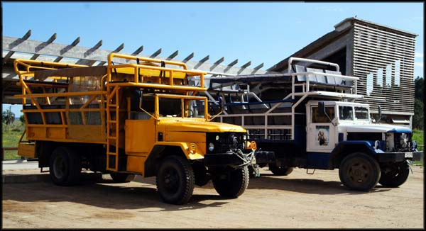Dois dos 4x4 que levam até Cabo Polonio, brutos!
A bilheteria abriu atrasada um pouco, comprei minha passagem e fiquei lá esperando o caminhão sair. São caminhões bem velhinhos, mal tratados, mas com cara de brabos. E uns caras faziam lá umas gambiarras para manter os motores funcionando. A carroceria tem dois andares, em uma armação de ferro com cadeiras.
Enquanto eu esperava chegaram mais vários turistas. Um grupo falando em inglês. Depois outro, no qual estava uma senhora que passou por mim indo ao banheiro e conversando em português com outra. Quando ela voltou, eu perguntei se eram do Brasil. Era um grupo de quatro casais de senhores de Porto Alegre, que viajavam em duas caminhonetes pelo Uruguai. Acharam graça de eu estar ali sozinho fazendo aquela viagem de moto. Depois no caminhão bateríamos um bom papo, gente boa eram os coroas.
Cabo Polonio
Deu o horário, um pouquinho mais, e pudemos subir nos caminhões para começar a aventura. E lá partimos, primeiro por uma estradinha de terra batida, e depois de uma cancela controlada por um vigia. Após ele conferir a quantidade de tíquetes pagos e contar quantos passageiros éramos, a entrada foi liberada, e começamos a rodar pela areia fofa de praia.
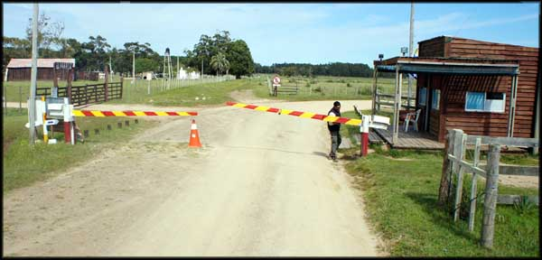Cancela que delimita a área de preservação, entrada controlada.
Foi bem divertido, como andar em um bugre bem grande nas dunas. O motor a diesel parecendo um trator feroz. Acho que rodamos lentamente por mais de vinte minutos, tinha horas que parecia que iríamos ficar atolados, mas o motorista era experiente, claro, e fazia altas manobras.
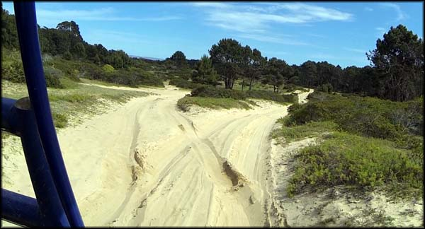Caminho pela areia, ambiente preservado, divertido e bonito.
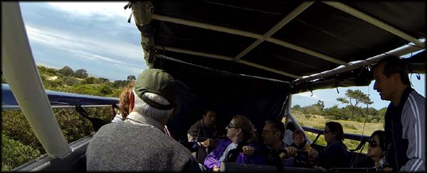E a galera curtindo o passeio acidentado
Até que chegamos na praia em si, com águas bem calminhas, deve ser excelente para banho nos dias quentes. No dia estava sol, mas o vento frio me manteve de touca de lã em plena praia.
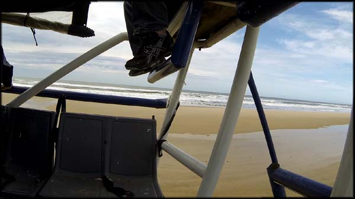Chegando na praia, após o longo caminho pela areia.
O caminhão foi beirando a água, diversas aves da fauna local enfeitando os céus, até que pudemos avistar ao longe o vilarejo. Chegando ao “centro” da vila, paramos e descemos. A próxima viagem de volta do caminhão seria às 14:00h. Um grupo de pessoas que havia pernoitado por lá já esperava para embarcar nesse caminhão e voltar.
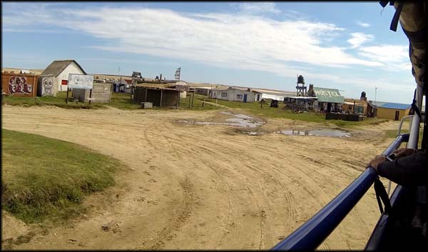Centro da vila de Cabo Polonio
Eu tinha três horas para conhecer o lugar, mais do que suficiente, já que o clima não permitiria banhos de mar ou algo do gênero, ainda que eu gostasse de praia.
Fui andando em meio às casinhas, todas de madeira, bem modestas e improvisadas. Não há eletricidade no local, a não ser a produzida por geradores a óleo. A pequena vila de pescadores vive à base de lampião. Imagine como deve ser observar o céu estrelado à noite, sem a poluição e iluminação das cidades grandes. Alucinante.
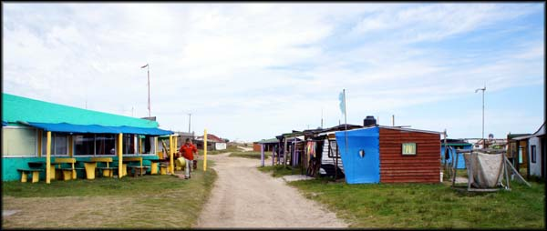Estilo das casinhas em Cabo Polonio
O lugar em si é bem “hippie”. Galera deve lotar as modestas e precárias hospedagens no verão, tudo mundo curtindo, fazendo a cabeça e festas. Existem alguns hostels lá, e restaurantes também. Dentro das circunstâncias, numa estrutura bem rústica, o turista que quiser passar um fim de semana lá tem opções.
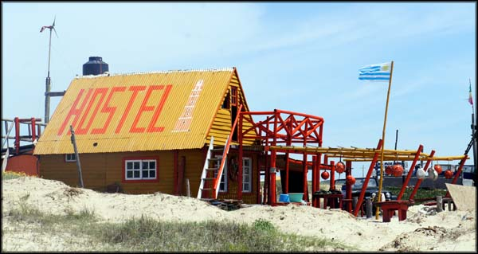Um dos hostels em Cabo Polonio. Simples? Rústico?
Também existem restaurantes e lanchonetes, tudo no mesmo clima, bem rústico. Mas estava tudo fechado por ser fora de temporada.
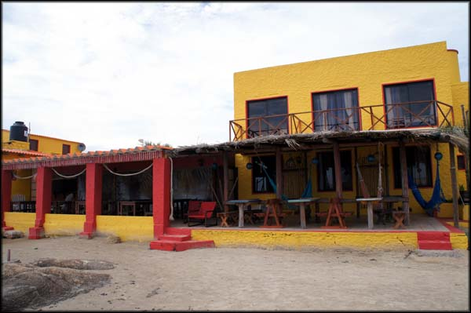Um dos restaurantes em Cabo Polonio. Acho que era um hotel também.
Continuei caminhando por entre as casas, me separei do pessoal que veio comigo no caminhão, e fui em direção à praia. E fui rodando a orla, até onde a areia da praia acaba, e começa uma parte de rochas, já próximo ao Farol.
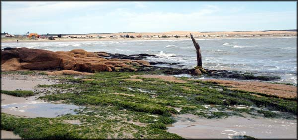Acabando a areia de praia, começa uma área rochosa
Fui caminhando sobre as rochas, e esbarrei com uma carcaça de filhote de Leão Marinho (ou “Lobo Marinho” como eles chamam por lá). Que pena, como teria morrido, pensei. Depois, o esqueleto de um adulto. E outro. É, morriam bastante desses bichos.
Pulando sobre as pedras, me deparei com outro filhote de Leão Marinho. Esse estava vivo, mas bem fragilizado. Me deu muita pena, era do tamanho de um cachorro pequeno, e andava com dificuldades com aquelas "patinhas-nadadeiras". Aquela cena me cortou o coração, e fiquei bem triste ali. A natureza é punk mesmo, a seleção natural, só os fortes sobrevivem, e à vezes. Pelo cenário, percebi que era uma coisa normal naquele meio ambiente, e fui logo embora, para não ficar mais filosofando sobre a morte precoce daquele ser muito bacana, sem que eu pudesse fazer nada.
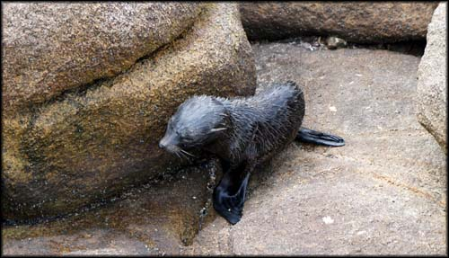Um filhote de Lobo Marinho, destino incerto... :(
Depois fui perguntar aos nativos da ilha, que me deram uma explicação que foi confirmada depois pelo dono do hotel em que eu estava em Aguas Dulces. Eles disseram que, quando o filhote se perde da mãe, não adianta recolocá-lo no grupo porque ele não vai mais ser aceito. Vai morrer de fome ou acabar devorado por predadores. E que uma vez houve lá uma tempestade em que centenas de filhotes se perderam e foram parar nas praias, e todo mundo tentava ajudar, dando mamadeira e tudo. Mas que depois de fazerem contato com vários órgãos e instituições de preservação ambiental, descobriram que as chances dos bichinhos sobreviverem eram mínimas, devido à própria natureza da espécie. Não consegui descobrir se isso tudo é verdade, mas me serviu de consolo.
Retomei o ânimo, busquei me conformar, e segui pelas pedras. Mais carcaças de animais mortos. Passei por outra pedra onde se acumulava um grande número de pássaros, que julguei serem Gaivotas. A cena era bonita. Elas decolavam, e ficavam batendo asas devagar, planando contra o vento, “voando sem sair do lugar”. Muito inspirador.
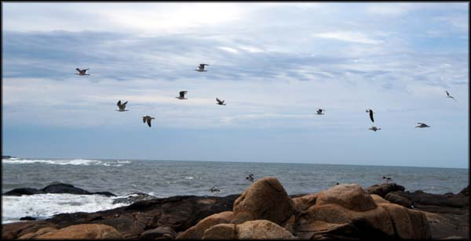Imagens espetaculares
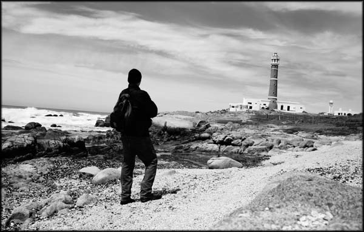Farol de Cabo Polonio. Essa cena me lembrou o filme “Os Pássaros” de Hitchcock.
Avançando um pouco mais, já margeando o Farol, aí sim pude ver os Leões Marinhos. Dezenas deles, adultos e filhotes. Alguns enormes. Em um provável ritual de acasalamento os que pareciam ser machos empurravam a cabeça das fêmeas, e tudo aos “gritos”. Gritos não, aqueles sons doidos que eles emitem, sei lá.
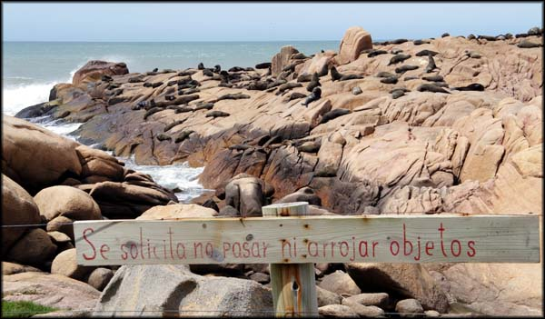Vista de longe, a pedra onde os leões marinhos passavam o tempo
Havia alguns bem grandes, mas não dava para chegar muito próximo, já que tinha uma espécie de cerca frágil e improvisada de arame, com uma placa proibindo a passagem. Respeitei, obviamente. Fui dando a volta nas rochas, e pelo outro lado, e consegui ficar mais próximo dos bichos. Realmente muito legal presenciar um tipo de natureza selvagem que não existe na região em que moramos.
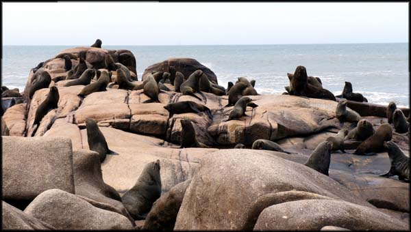 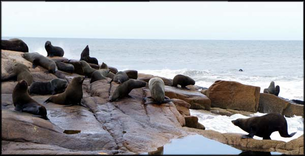Fiquei lá por um tempo admirando o ambiente. Depois voltei por onde vim. Ainda tinha um bom tempo até a saída do próximo caminhão, então fui caminhar pela areia da praia até as dunas, por onde se vem de Valizas.
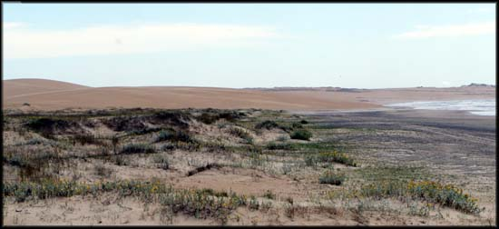Dunas que ligam Valizas a Cabo Polonio. Uma bela caminhada.
Andei bastante, é bem longe! Pude avistar um grupo de pessoas vindo lentamente ao longe, fazendo esse trajeto. Realmente foi bom eu ter ido de caminhão, aquela andança tomaria boa parte do dia, e só valeria a pena pelo visual se eu fosse passar a noite no vilarejo, o que não era minha intenção nesta trip.
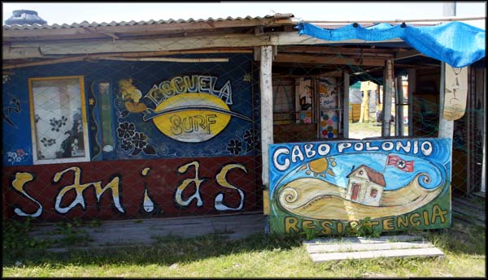O clima de lá é esse
Sentei numa estrutura de cimento de uma das casinhas de pescadores, e almocei o resto de queijo e batata frita, e um pedaço de pão que tinha guardado da janta da noite anterior. Uma garrafa d’água. Só isso.
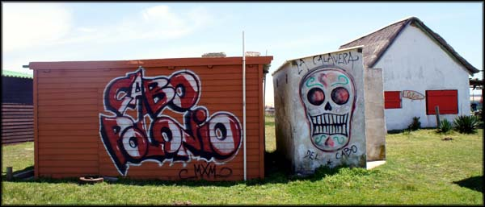Às 14:00 já estava eu lá no “centro” do vilarejo de Cabo Polonio para embarcar no caminhão, e fazer o percurso de volta. Mais meia hora de diversão com o caminhão 4x4 nas areias, e chegamos na entrada do parque. Troquei de roupa e subi na moto. Ainda teria um bom tempo de dia claro para conhecer outros lugares.
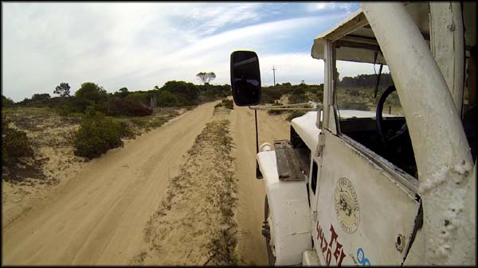Voltando de Cabo Polonio, mais diversão nos caminhões 4x4 na areia
Liguei a motoca e voltei para a estrada. Meu plano era continuar os passeios do dia, que ainda renderia bem mais. Iria só passar no hotel em Aguas Dulces para deixar a bagagem, e continuar curtindo. Aquelas horas em Cabo Polonio revigoraram meu ânimo. Finalmente. Queria conhecer mais lugares como aquele e aproveitar ao máximo minha primeira longa viagem de moto. Foi um longo dia, e vou falar sobre o resto dele em outro texto.